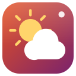

Weather for Ubuntu
Forecasts with rain, wind, UV, air quality and pollen

About
HRHsofts Weather shows the weather for every place you care about.
- Current conditions in a header that changes with the sky, day and night
- An hourly chart for the next 48 hours and a 16-day forecast with temperature ranges
- Wind, humidity, pressure, visibility, UV, sunrise, sunset and daylight
- Air quality (European AQI, PM2.5, PM10, ozone, NO2) and pollen where available
- Moon phase and illumination
- Your location, or any of thousands of places found offline; forecasts are cached for offline use
- Optional severe-weather alerts for thunderstorms, heavy rain, strong wind, heat, cold, UV and poor air
Forecast and air quality data come from Open-Meteo (CC BY 4.0); no account or key is needed.
Install
From the terminal (adds the signed HRHsuite repository so Weather keeps itself updated):
wget -qO- https://hrhsofts-repos.github.io/apt/install.sh | sudo sh -s -- weatherIf the repository is already set up, or on HRHsofts Ubuntu:
sudo apt install hrhsofts-weatherOr download the .deb and install it with App Center or sudo apt install ./hrhsofts-weather_1.0.0-1_all.deb.
- Package
hrhsofts-weather- Version
- 1.0.0
- Released
- 2026-11-12
- Size
- 114.2 KB
- SHA-256
de72ed1c148fcb9ba211eedfd0f024be94e3162c8a330d3dcc10d3258263eddd- License
- GNU GPL 3.0 or later (free software)
- Requires
- Ubuntu 26.04 or later, 64-bit (amd64)
What's new
Version 1.0.0 · 12 Nov 2026
- New app: current conditions, a 48-hour chart and a 16-day forecast for your location and saved places
- Wind, humidity, pressure, visibility, UV, sunrise, sunset, moon phase, air quality and pollen
- Offline place search and cached forecasts; data from Open-Meteo with no account needed
- Optional severe-weather alerts for storms, heavy rain, strong wind, heat, cold, UV and poor air
All HRHsofts apps · Get HRHsofts Ubuntu with Weather preinstalled